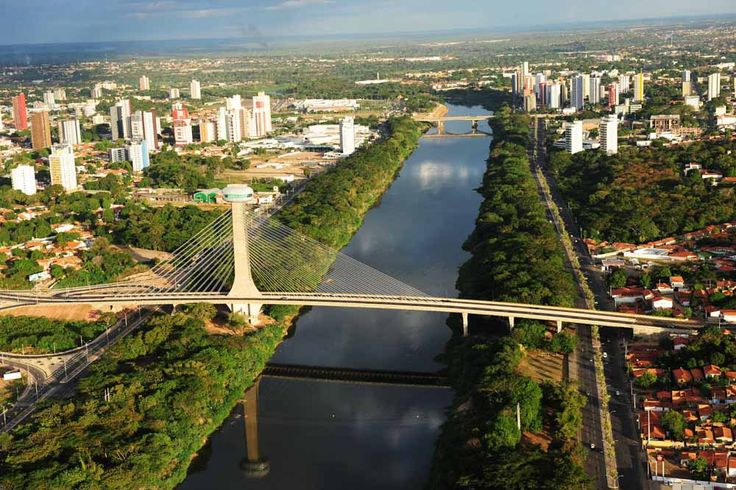
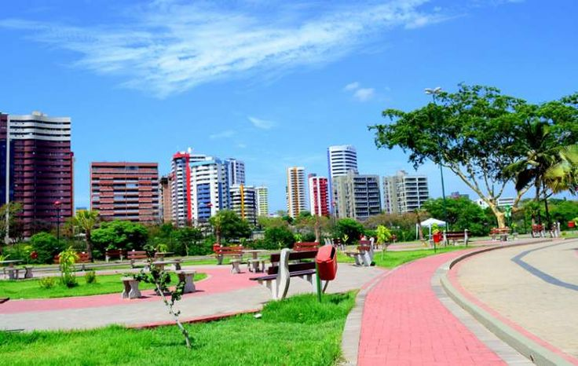
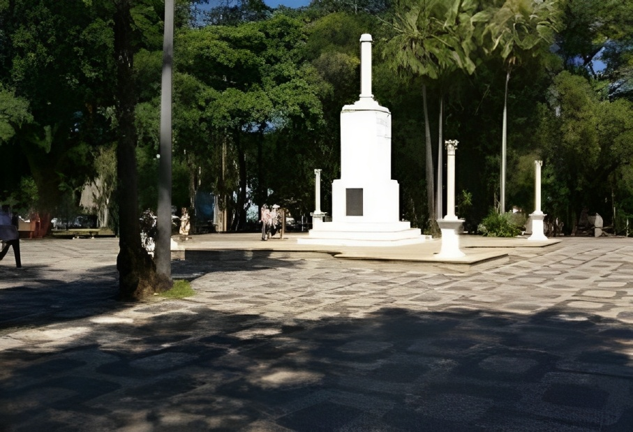
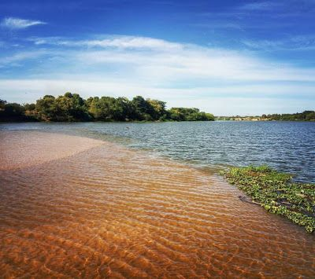
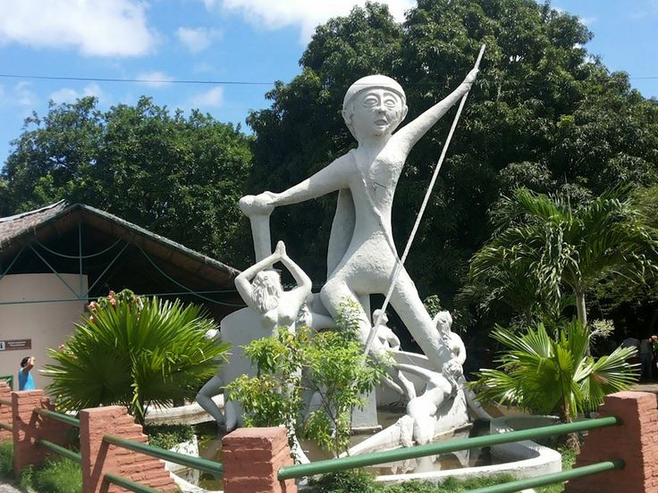
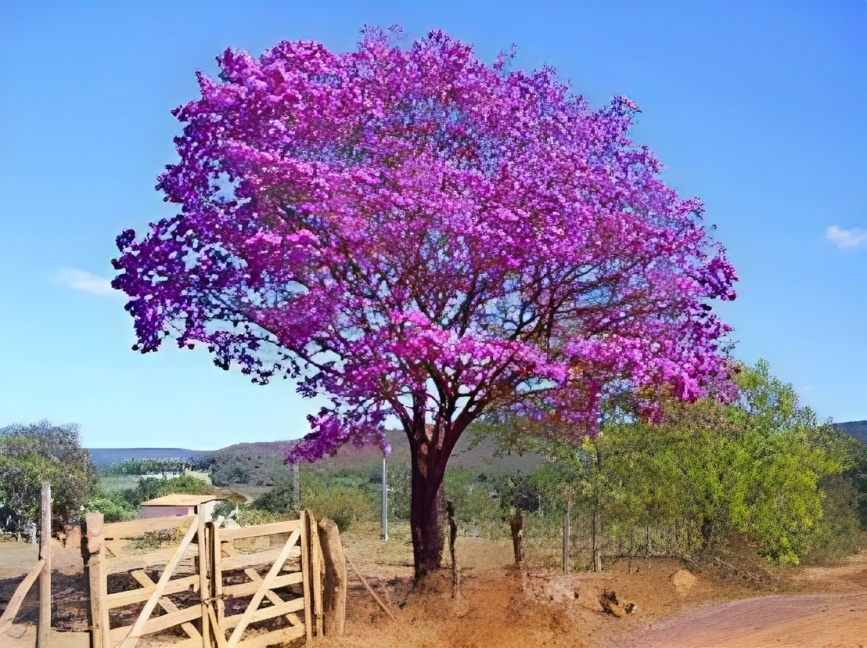

Estaiada Bridge

Potycabana Park

Praça da Bandeira Square

Meeting of the Rivers, two rivers meet

Cabeça de Cuia, statue of a folk legend of the city

Ipê, the tree is full of flowers. There is ipê many colors
Last visited on: